Spring AOP
AOP 实现机制
Java 平台下实现 AOP 的一些方式：
- 动态代理，最普遍的 AOP 实现方式，通过动态代理的机制间接访问对象。
- 动态字节码增强，CGLIB 的实现方式，将逻辑切入编译好的 class 文件。
- Java 代码生成，早期 EJB 容器使用的方法，直接生成代码编译产生相应的 Java 类。
- 自定义类加载器，在类加载过程中将切面逻辑织入 class 文件。
- AOL 扩展，AspectJ 使用这种方式实现。
Spring AOP 默认使用动态的的方式实现，当对象没有实现代理接口时才会使用 CGLib 实现AOP。
代理模式
代理模式是 Spring AOP 的一个重要实现方式。
静态代理
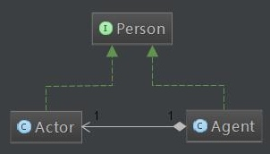
如果我们需要实现这样一个简单的静态代理。
//// 定义接口 ////
interface Person {
void speak();
}
//// 定义实体 ////
class Actor implements Person {
private String content;
public Actor(String content) {
this.content = content;
}
@Override
public void speak() {
System.out.println(this.content);
}
}
//// 定义代理 ////
class Agent implements Person {
private Actor actor;
private String before;
private String after;
public Agent(Actor actor, String before, String after) {
this.actor = actor;
this.before = before;
this.after = after;
}
@Override
public void speak() {
System.out.println("Before actor speak, Agent say: " + before);
this.actor.speak();
System.out.println("After actor speak, Agent say: " + after);
}
}
//// 测试方法 ////
public class StaticProxy {
public static void main(String[] args) {
Actor actor = new Actor("I am a famous actor!");
Agent agent = new Agent(actor, "Hello I am an agent.", "That's all!");
agent.speak();
}
}
//// 输出 ////
// Before actor speak, Agent say: Hello I am an agent.
// I am a famous actor!
// After actor speak, Agent say: That's all!
动态代理
我们通过 JDK 自带的反射方法里实现动态代理，这里需要讲解一下最重要的一个接口和一个静态方法：
import java.lang.reflect
public interface InvocationHandler {
public Object invoke(Object proxy, // 被代理类的实例
Method method, // 实例需要被调用的方法
Object[] args) // 被调用方法的参数
throws Throwable;
}
// 被代理类的加载器
public static Object newProxyInstance(ClassLoader loader,
// 被代理类的接口数组
Class<?>[] interfaces,
// 上面那个接口的实例
InvocationHandler h)
throws IllegalArgumentException
通过这一个接口和这个静态方法实现动态代理：
//// 定义接口 ////
public interface Fruit {
public void show();
}
//// 定义接口实现 ////
public class Apple implements Fruit{
@Override
public void show() {
System.out.println("<<<<show method is invoked");
}
}
//// 利用刚才提到的接口和方法实现动态代理 ////
public class DynamicAgent {
//实现InvocationHandler接口，并且可以初始化被代理类的对象
static class MyHandler implements InvocationHandler {
private Object proxy;
public MyHandler(Object proxy) {
this.proxy = proxy;
}
//自定义invoke方法
@Override
public Object invoke(Object proxy, Method method, Object[] args) throws Throwable {
System.out.println(">>>>before invoking");
//真正调用方法的地方
Object ret = method.invoke(this.proxy, args);
System.out.println(">>>>after invoking");
return ret;
}
}
//返回一个被修改过的对象
public static Object agent(Class interfaceClazz, Object proxy) {
return Proxy.newProxyInstance(interfaceClazz.getClassLoader(), new Class[]{interfaceClazz},
new MyHandler(proxy));
}
}
//// 测试 ////
public class ReflectTest {
public static void main(String[] args) throws InvocationTargetException, IllegalAccessException {
//注意一定要返回接口，不能返回实现类否则会报错
Fruit fruit = (Fruit) DynamicAgent.agent(Fruit.class, new Apple());
fruit.show();
}
}
约定编程
在 AOP 之前先来看一个代理模式和约定编程的例子。
拦截器
// 定义接口与接口实现
public interface HelloService {
public void sayHello(String name);
}
public class HelloServiceimpl implements HelloService {
@Override
public void sayHello (String name) {
if (name == null I I name.trim() == "")
throw new RuntimeException("parameter is null ! ! " ) ;
System.out.println(" hello "+ name);
}
}
使用代理的方式实现一个拦截器
//// 拦截器接口
public interface Interceptor {
//事前方法
public boolean before();
//事后方法
public void after();
/**
* 取代原有事件方法
* @param invocation -- 回调参数，可以通过它的proceed方法，回调原有事件
* @return 原有事件返回对象
* @throws InvocationTargetException
* @throws IllegalAccessException
*/
public Object around(Invocation invocation) throws InvocationTargetException, IllegalAccessException;
//是否返回方法。事件没有发生异常执行
public void afterReturning();
//事后异常方法，当事件发生异常后执行
public void afterThrowing();
//是否使用around方法取代原有方法
boolean useAround();
}
//// 拦截器实现
public class MyInterceptor implements Interceptor {
@Override
public boolean before() {
System.out.println("before ......");
return true;
}
@Override
public boolean useAround() {
return true;
}
@Override
public void after() {
System.out.println("after ......");
}
@Override
public Object around(Invocation invocation) throws InvocationTargetException, IllegalAccessException {
System.out.println("around before ......");
Object obj = invocation.proceed();
System.out.println("around after ......");
return obj;
}
@Override
public void afterReturning() {
System.out.println("afterReturning......");
}
@Override
public void afterThrowing() {
System.out.println("afterThrowing 。。。。。。");
}
}
//// around 方法中的 Invocation
import java.lang.reflect.InvocationTargetException;
import java.lang.reflect.Method;
public class Invocation {
private Object[] params;
private Method method;
private Object target;
public Invocation(Object target, Method method, Object[] params) {
this.target = target;
this.method = method;
this.params = params;
}
public Object proceed() throws InvocationTargetException, IllegalAccessException {
// 利用反射的方式调用原函数
return method.invoke(target, params);
}
/* setter */
}
// 测试
public class AopMain {
public static void main(String[] args) {
testProxy();
}
private static void testProxy() {
HelloService helloService = new HelloServiceImpl();
HelloService proxy = (HelloService) ProxyBean.getProxyBean(helloService, new MyInterceptor());
proxy.sayHello("zhangsan");
System.out.println("\n###############name is null!!#############\n");
proxy.sayHello(null);
}
}
/* 输出如下：
before ......
around before......
hello zhangsan
around after ......
after ......
afterReturning ......
###############name is null!!###############
before ......
around before ......
after ......
afterThrowing......
*/
约定流程
实际上拦截器调用代理对象时，使用了这样一套约定流程：
- 先调用拦截器的 before 方法。
- 调用拦截器的 useAround 方法判断是否要调用 around 方法，如果调用忽略 target 对象的对应方法，否贼调用 target 对象的对应方法。
- 调用 拦截器的 after 方法
- 发生异常调用 afterThrowing 方法 ，正常返回调用 afterReturn 方法。
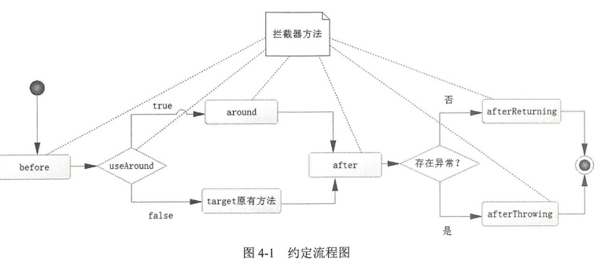
AOP
例子
import java.sql.Connection;
import java.sql.DriverManager;
import java.sql.PreparedStatement;
import java.sql.SQLException;
public class UserDao {
public int insertUser(Connection conn, User user) throws SQLException {
PreparedStatement ps = null;
try {
ps = conn.prepareStatement("insert into t_user(user_name, note) values( ?, ?)");
ps.setString(1, user.getUsername());
ps.setString(2, user.getNote());
return ps.executeUpdate();
} finally {
ps.close();
}
}
}
public class UserService {
public int insertUser() {
UserDao userDao = new UserDao();
User user = new User();
user.setUsername("user_name_1");
user.setNote("note_1");
Connection conn = null;
int result = 0;
try {
Class.forName("com.mysql.jdbc.Driver");
conn = DriverManager.getConnection("jdbc:mysql://localhost:3306/xxx", "root", "123456");
//非自动提交事务
conn.setAutoCommit(false);
result = userDao.insertUser(conn, user);
//提交事务
conn.commit();
} catch (Exception e) {
try {
//回滚事务
conn.rollback();
} catch (SQLException ex) {
ex.printStackTrace();
}
e.printStackTrace();
} finally {
//释放数据连接资源
if (conn != null) {
try {
conn.close();
} catch (SQLException e) {
e.printStackTrace();
}
}
}
return result;
}
}
可以发现这个流程是可以约定化的。
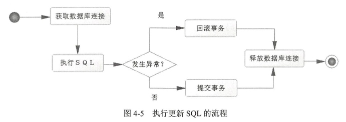
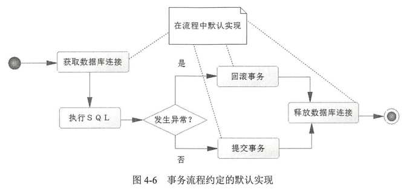
概念
- 连接点(join point)，被拦截对象，spring AOP 中就是一个特定的方法。
- 目标对象(target)，即被代理对象。
- 切点(point cut)，对连接点进行匹配的一个功能概念。
- 切面(aspect)，定义切点，通知，和引入的地方。
- 通知(advice)，约定流程中的方法，比如
before前置通知。 - 织入(weaving)，为原有对象生成代理对象并将其与切点匹配织入约定流程的过程。
- 引入(introduction)，引入新的类与方法，增强原有的 Bean。
以之前的拦截器为例，说明一下约定流程。
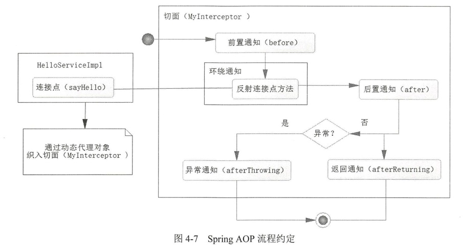
＠AspectJ
这里以AspectJ为例说明 AOP流程，Spring AOP只支持对方法进行拦截。
一个使用 AOP 来对用户参数做校验的例子：
// Service 接口
public interface UserService {
public void printUser();
}
/////
@Service
public class UserServiceImpl implements UserService {
@Override
public void printUser(User user) {
if (user == null) {
throw new RuntimeException("检查用户参数是否为空......");
}
System.out.print("id =" + user.getId());
System.out.print("\tusername =" + user.getUsername());
System.out.println("\tnote =" + user.getNote());
}
}
// 用于引入的接口
public interface UserValidator {
public boolean validate(User user);
}
// 接口实现
public class UserValidatorImpl implements UserValidator {
@Override
public boolean validate(User user) {
System.out.println("引入新的接口："+ UserValidator.class.getSimpleName());
return user != null;
}
}
@Aspect
＠Order(1) // 多个切面时指定切面顺序
public class MyAspect {
// 切点定义
@Pointcut("execution(* com.nemos.UserServiceImpl.printUser(..))")
public void pointCut() {}
// 直接使用正则匹配
@Before("execution(* com.nemos.UserServiceImpl.printUser(..))")
public void before() {
System.out.println("before ......");
}
// 使用切点，和正则匹配含义相同，并传入连接点名为 user 的参数
@After("pointCut() && args(user)")
// JoinPoint 为非环绕通知自动传入的对象
public void after(JoinPoint point, User user) {
Object[] args = point.getArgs() ;
System.out.println("after ......");
}
@AfterReturning("pointCut()")
public void afterReturning() {
System.out.println("afterReturning ......");
}
@AfterThrowing("pointCut()")
public void afterThrowing() {
System.out.println("afterThrowing ......");
}
@Around("pointCut()")
public void around(ProceedingJoinPoint jp) throws Throwable {
System.out.println("around before......");
jp.proceed(); // 调用原方法
System.out.println("around after......");
}
// 定义引入
@DeclareParents(value="com.nemos.UserServiceImpl+",
defaultImpl=UserValidatorImpl.class)
public UserValidator userValidator;
// 省略
}
//// 最后使用的时候，需要在某个地方定义切面
@Bean(name = "myAspect")
public MyAspect initMyAspect() {
return new MyAspect();
}
测试方法：
//定义请求
@RequestMapping ("/vp")
//返回JSON
@ResponseBody
public User valida teAndPrint (Long id, String userName, String note) {
User user = new User() ;
user.setId(id) ;
user.setUsername(userName) ;
user.setNote(note) ;
//强制转换
UserValidator userValidator = (UserValidator) userService ;
//验证用户是否为空
if (userValidator.validate (user)) {
userService.printUser(user);
}
return user ;
}
这里我们一共做了几件事，逐一分析如下：
@Aspect定义切面类。- 当有多个切面都匹配时可以用
@Order()表明切面顺序，也可以在切面类中实现Orderd接口来返回切面顺序。 ＠Before、＠After、＠AfterReturning、＠AfterThrowing通知。@Around因为环绕通知会代替原方法，所以需要传入一个ProceedingJoinPoint的proceed()方法来调用原来的方法。
- 当有多个切面都匹配时可以用
- 使用了
@Pointcut来定义切点：execution(*com.nemos.UserServiceImpl.printUser(..))正则式子，匹配织入的方法。execution使用一个正则式子来表示需要拦截的方法。*表示返回任意类型。com.nemos.UserServiceImpl指定目标对象的名称。printUser指定方法。(..)表示任意参数匹配。
＠DeclareParents引入新的类增强功能。value，指向要增强功能的目标对象。defaultlmpl，引入增强功能的类。
args(user)获得方法的参数- 如果没有定义 Service 接口，就会使用 CGLib 来实现 AOP。
一些常用的切点指示器：
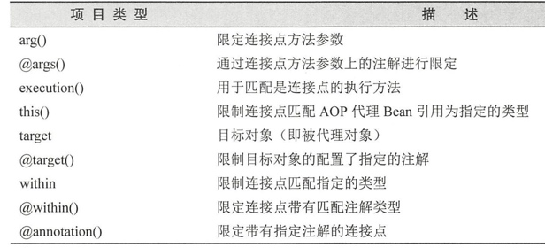
AOP 深入
这一部分推荐结合《Spring 揭秘》食用。
Joinpoint
AOP 需要在某个过程中织入，这种织入的执行时间点称为 joinpoint，常见的有：
- 方法调用，某个方法被调用时。
- 方法调用执行，方法内部执行的开始时点。
- 构造方法调用，某个对象被调用构造函数初始化时。
- 构造方法执行，类似。
- 字段设置，通过 setter 方法设置属性时。
- 字段获取，通过 getter 方法获得属性时。
- 异常处理执行，异常抛出后对应的处理逻辑执行点。
- 类初始化，类中某些静态类型初始化的时点。
Spring 只支持方法执行类型的 joinpoint。
Pointcut
Pointcut的表述方式：
- 直接指定 joinpoint 所在的方法名。
- 正则匹配。普遍方式
- 使用特点的 pointcut 语言。
public interface Pointcut {
ClassFilter getClassFilter() ; // 被执行织入操作的对象
MethodMatcher getMethodMatcher() ; // 对象对应的方法
Pointcut TRUE = TruePointcut.INSTANCE;
}
////
public interface ClassFilter {
boolean matched (Class clazz); // 判断目标对象的类型与 pointcut 类型是否一致。
ClassFilter TRUE = TrueClassFilter.INSTANCE;
}
////
public interface MethoaMatcher [
boolean matches(Method method, Class targetClass) ;
boolean matches(Method method, Class targetClass, Object[] args) ;
boolean isRuntime() ;
MethodMatcher TRUE = TrueMethodMatcher.INSTANCE;
)
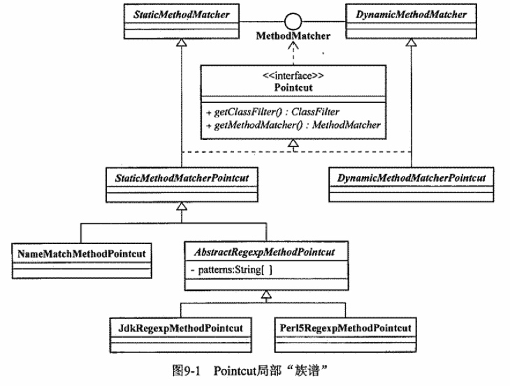
常见 Pointcut
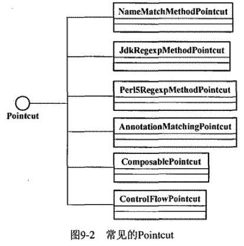
NameMatchMethodPointcut，对类名进行匹配。JdkRegexpMethodPointcut，以正则匹配方法签名。AnnotationMatchingPointcut，注解匹配。ComposablePointcut，用于实现逻辑运算。- 自定义。
Advice
advice 可以分为两类：
- per-class，可以在目标对象类的所以实例之间共享。只提供方法拦截，不会为目标对象保存状态或者添加特性。上图中的所有都是这种类型的 advice。
- Before advice
- Throw advice
- AfterReturning advice
- Around advice
- per-instance，Introduction 为此唯一实现。不会在目标类中共享，但是会为不同的实例对象保存各种的状态及相关逻辑。
DelegatingIntroductionInterceptor，委派一个对象添加到目标对象上。
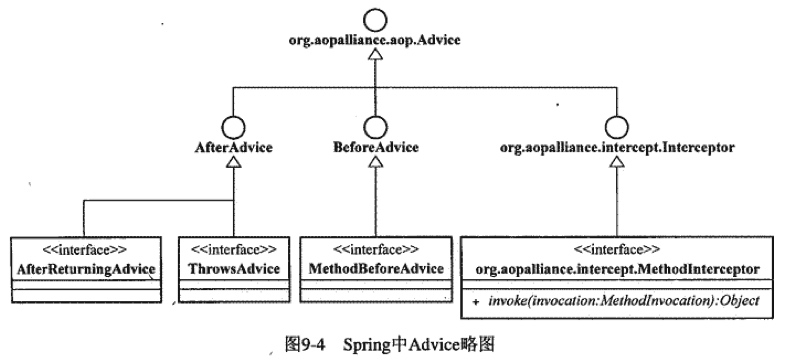
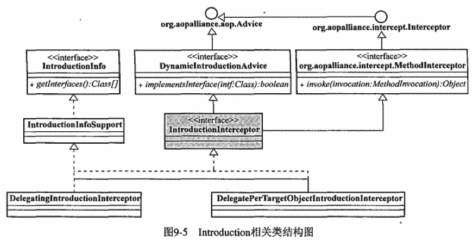
Advisor
Advisor 是 aspect 的一种实现，持有多个 Pointcut 和多个 Advice。
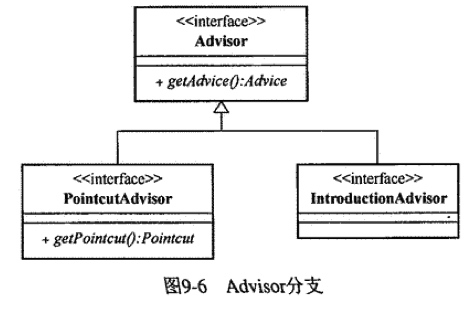
简单先将其分为两个分支：
PointcutAdvisorIntroductionAdvisor
PointcutAdvisor
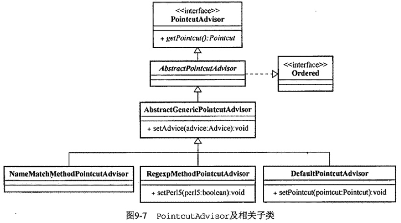
常用实现：
DefaultPointcutAdvisor，除了不能指定 Introduction 类型的 Advice 其他都可以通过这个使用。NameMatchMethodPointcutAdvisor，细化后的DefaultPointcutAdvisor，限定了 Advice 只能为NameMatchMethodPointcut。RegexpMethodPointcutAdvisor，同上限定。
IntroductionAdvisor
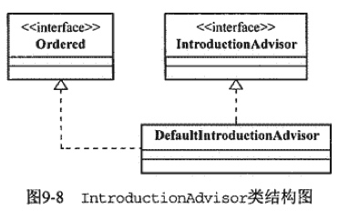
仅限于 Introduction 使用场景。
织入
介绍完了组件，说明一下具体的织入过程。
其中 ProxyFactory 是织入器最基本的一个实现。
可以通过类似代理了模式的 ProxyFactory proxy = new ProxyFactory(targetObject) 的方式来使用。
这里需要两个组件：
- 需要织入的目标对象，可以通过构造方法传入或者 setter 方法设置。
- 要应用的切面对象，即 Advisor。